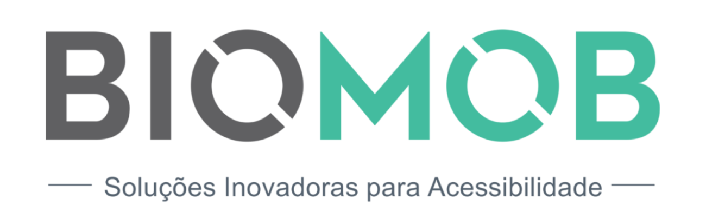
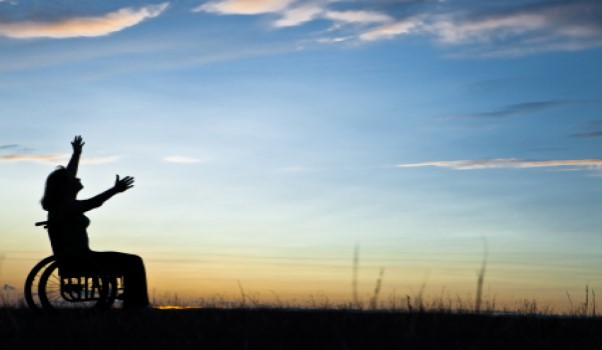
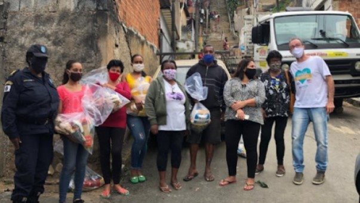

Instituto BioMob
Observatório da diversidade e inclusão

O que é
Criamos Soluções digitais para tomar o convívio social mais harmônico, proporcionando qualidade da vida e uma participação plena na sociedade para aqueles que se veem omitidos dela.
Quem somos?
O projeto surgiu da necessidade de seus próprios criadores em obter informações sobre acessibilidade. Promovemos eventos, notícias e campanhas que contribuem com a visibilidade da comunidade que tanto precisa de uma maior locomoção no dia a dia. Acreditamos que se disfruta melhor da vida (bio) quando ela está inteiramente conectada com a mobilidade (mob). Exercendo o direito de ir e vir com plenitude.
Projeto Cestas Básicas
Projeto toma lá dá cá
É um projeto onde coletamos tampinhas de garrafas pet e lacres de latinhas para trocamos por cadeira de rodas para doação.

Balcão de empregos
Oferecemos treinamento para o primeiro emprego. Com aulas semanais presenciais e online preparando jovens e pessoas com diversidade funcional para o ingresso no mercado de trabalho. Buscando facilitar a conquista do primeiro emprego.
Consultoria
Não há nada melhor do que frequentar um espaço com total autonomia. Sabemos que, para isso acontecer, há várias adaptações que tem que ser feitas e equipamentos que tem de ser colocados, para um melhor aproveitamento das pessoas com deficiência física/auditiva/visual etc.